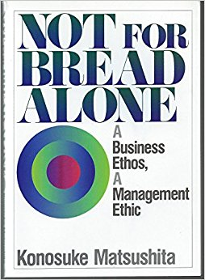

Reading
Everyone has a collection of blog posts and books that have helped them with a specific problem area or changed how they think about the world.
Below are the books and blog posts I have found really helped my thinking on businesses, working culture, and how to do it right.
My goal is for this list to be challenged and change over time, that's why I run a non-fiction book club with some friends in London. If you want to join us just email me.
Books
The Second Machine Age
The way we think about GDP in a digital age is wrong and discussed how AI would impact jobs back in 2014.
My most common example from the book is how as consumers it takes a generational shift to realise the full potential of new technology, in the intermediate step we continue our old practices but slightly more efficiently.
Not For Bread Alone
 I was inspired to read this book by Konosuke Matsushita, the founder Panasonic and a "god of management" after Yancey Strickler's talk at Web Summit 2015.
{kind=link}
My Life & Work
Henry Ford did a lot wrong in his life and I've found it hard to align the value I've got from his business thinking with my rejection of a lot of the actions to took in his life.
However there are some lessons I took from his autobiography;
"Start with an article that suits and then study to find some way of eliminating the entirely useless parts. This applies to everything--a shoe, a dress, a house, a piece of machinery, a railroad, a steamship, an airplane. As we cut out useless parts and simplify necessary ones we also cut down the cost of making."
"if you give attention to work and service, the resources will increase more rapidly than you can devise ways and means of disposing of them."
Start With No
I picked this book up when I started negotiating bigger long terms deals for Songkick and found the process not only great for my immediate task of negotiating deals with Shazam and Pandora it also contains models for approaching problems that are generalisable for issues that come up in product development.
Bad decisions are not the thing that kills you, it's not making a decision. If you make a wrong decision then your job is to learn from it, make another decision and move forwards.
Blog Posts
Paul Graham: Wealth
“There are a lot of ways to get rich, and this essay is about only one of them. This essay is about how to make money by creating wealth and getting paid for it. There are plenty of other ways to get money, including chance, speculation, marriage, inheritance, theft, extortion, fraud, monopoly, graft, lobbying, counterfeiting, and prospecting. Most of the greatest fortunes have probably involved several of these.”
Mark Leslie: The Arc of Company Life – and How to Prolong It
“No matter what excuses are made or exceptions declared, it’s the rule that companies at one time viewed as clear winners will ultimately experience the threat of decline and extinction at the end of the Arc of Life. No organization is immune to this fate. Only a select few have demonstrated their ability to undertake enough transformative shifts to extend their life decades beyond their competition.”
Ketan Jhaveri: Elon Musk: The Role of Analogy and Reasoning From First Principles in Disruptive Entrepreneurship
"'First principles' is a physics way of looking at the world…what that really means is that you boil things down to the most fundamental truths…and then reason up from there…that takes a lot more mental energy…"
Nilofer Merchant: Innovation Isn’t Tied to Size, but to Operating Rules
"The key for every firm — regardless of size — is to figure out how to consistently create value in a demanding, ever-changing market. That is hard no matter what size you are, no matter what industry you’re in.”
Justin Rosenstein: Do Great Things
"“We have a greater capacity to change the world today than the kings and presidents of just 50 years ago.”
“Number 1: Don’t sell out.
Number 2: Be idealistic.
…It’s not about conquering the world, it’s about doing the right thing. When done correctly, this creates the ultimate product-market fit.”
Travis Kalanick at Big Omaha 2011
Whatever it is you’re afraid of go after it. Fear just slows you down.
Dan Rogers: Be Aggressive or Fail
Good luck getting out of the forest.


Say hi
Drop me an emailhijameshughes@gmail.com.
Or follow me
On Twitter.